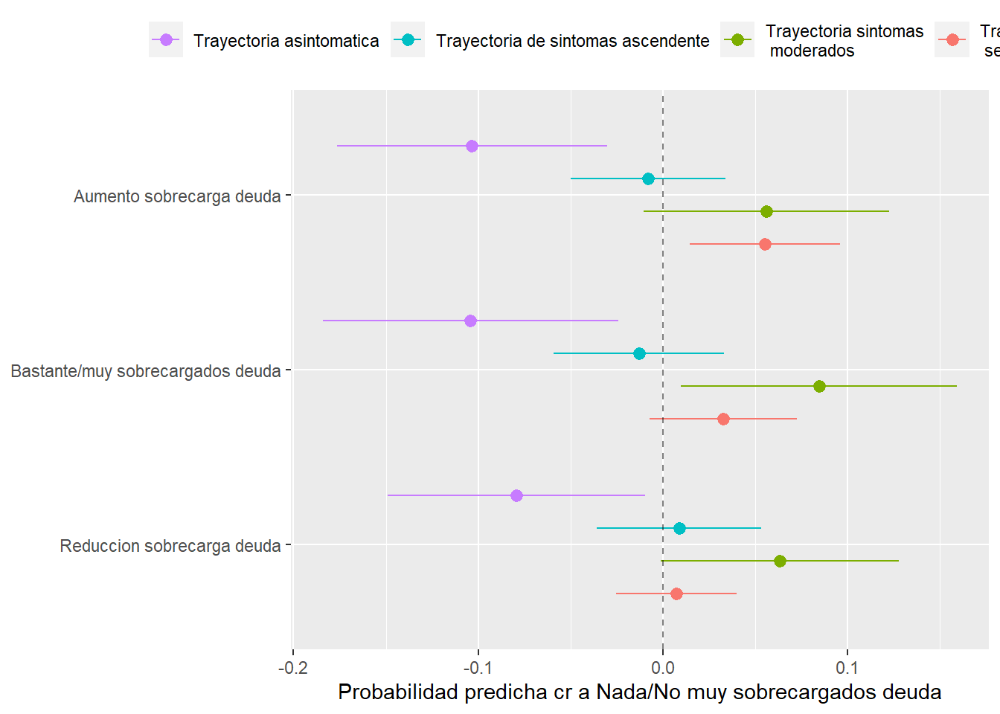
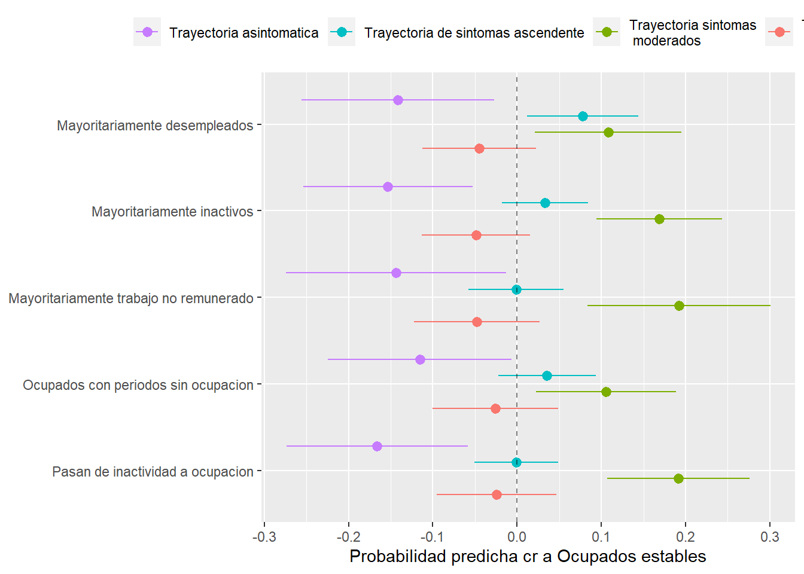
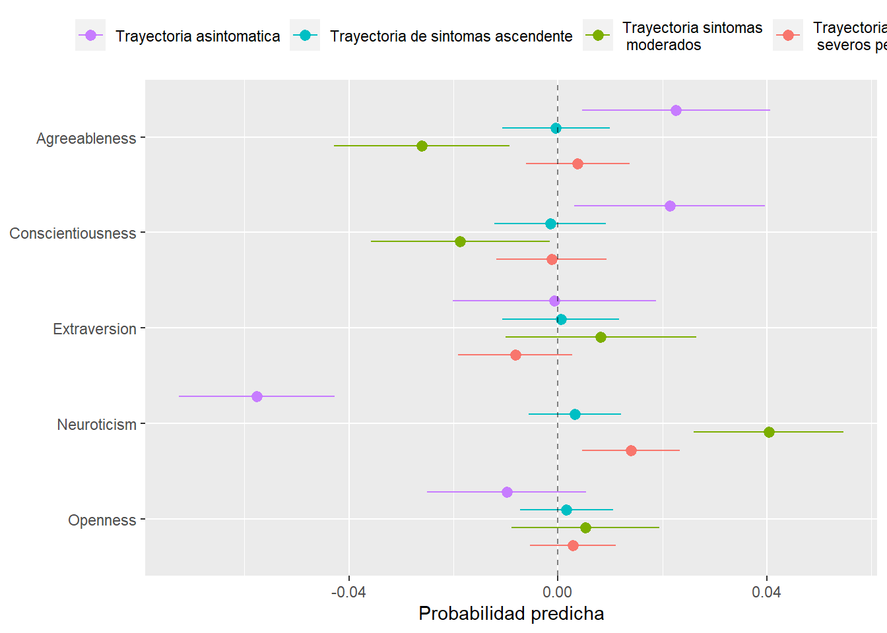

Capítulo 4 Modelo multinomial logit
load(file.path('..', 'inputs', 'datos_elsoc_preparados.RData'))
load(file.path('..', 'inputs', 'datos_salud_modelo.RData'))
load(file.path('..', 'inputs', 'modelos_lcmm.RData'))
elsoc_salud_modelo <- elsoc_salud_modelo %>%
left_join(elsoc_lcmm, by = 'idencuesta')4.1 Comparación trayectorias
with(elsoc_salud_modelo, rcompanion::cramerV(trayectoria_gmm.4lin, trayectoria_gmm.5lin, bias.correct = TRUE))## Cramer V
## 0.8318Trayectorias según clasificación
elsoc_salud_long %>%
left_join(elsoc_lcmm, by = 'idencuesta') %>%
filter(!is.na(trayectoria_gmm.4lin)) %>%
group_by(trayectoria_gmm.4lin) %>%
sjlabelled::as_label(ola) %>%
ggplot(aes(y = phq9, x = ola, group = idencuesta, color = trayectoria_gmm.4lin)) +
facet_wrap(~trayectoria_gmm.4lin) +
geom_line(alpha = .25) +
geom_point(alpha = .25) +
geom_hline(yintercept = 10, linetype = 2) +
scale_y_continuous(limits = c(0, 27)) +
theme(legend.position = 'none') +
ylab('Indice PHQ-9') +
xlab(NULL)
4.2 Variable dependiente: Trayectorias LCMM 4 clases - sin trayectoria salud subjetiva
m1 <- elsoc_salud_modelo %>%
sjlabelled::as_label(m0_sexo_w01, proyecto_vida_w03) %>%
nnet::multinom(trayectoria_gmm.4lin ~ m0_sexo_w01 + m0_edad_w01 + log_ing + trayectoria_deuda + trayectoria_apoyo_social + trayectoria_ocup,
data = ., weights = ponderador02_w01, quiet = TRUE) ## # weights: 68 (48 variable)
## initial value 1621.434842
## iter 10 value 1174.761465
## iter 20 value 997.875096
## iter 30 value 934.683457
## iter 40 value 930.896799
## iter 50 value 930.876897
## final value 930.876689
## convergedm2 <- elsoc_salud_modelo %>%
sjlabelled::as_label(m0_sexo_w01, proyecto_vida_w03) %>%
nnet::multinom(trayectoria_gmm.4lin ~ m0_sexo_w01 + m0_edad_w01 + log_ing + trayectoria_deuda + trayectoria_apoyo_social + trayectoria_ocup + proyecto_vida_w03 + estresor_n,
data = ., weights = ponderador02_w01, quiet = TRUE) ## # weights: 76 (54 variable)
## initial value 1621.434842
## iter 10 value 1160.094213
## iter 20 value 972.028620
## iter 30 value 905.068388
## iter 40 value 899.137250
## iter 50 value 899.079174
## final value 899.075846
## convergedm3 <- elsoc_salud_modelo %>%
sjlabelled::as_label(m0_sexo_w01, proyecto_vida_w03) %>%
nnet::multinom(trayectoria_gmm.4lin ~ m0_sexo_w01 + m0_edad_w01 + log_ing + trayectoria_deuda + trayectoria_apoyo_social + trayectoria_ocup + proyecto_vida_w03 + estresor_n + extraversion_w02 + agreeableness_w02 + conscientiousness_w02 + neuroticism_w02 + openness_w02,
data = ., weights = ponderador02_w01, quiet = TRUE)## # weights: 96 (69 variable)
## initial value 1609.774721
## iter 10 value 1249.717655
## iter 20 value 1009.524670
## iter 30 value 901.663211
## iter 40 value 868.890026
## iter 50 value 848.393287
## iter 60 value 847.710837
## iter 70 value 847.705451
## final value 847.705340
## convergedem1 <- marginaleffects(m1, type = "probs", conf_level = .95) %>%
summary() %>%
mutate(term = paste0(term, contrast))
em2 <- marginaleffects(m2, type = "probs", conf_level = .95) %>%
summary() %>%
mutate(term = paste0(term, contrast))
em3 <- marginaleffects(m3, type = "probs", conf_level = .95) %>%
summary() %>%
mutate(term = paste0(term, contrast))modelsummary::modelsummary(list(m1, m2, m3),
estimate = "{estimate}{stars}",
statistic = NULL,
stars = c('*' = .1, '**' = .05, '***' = .01),
shape = term + response ~ model,
exponentiate = TRUE)| Model 1 | Model 2 | Model 3 | ||
|---|---|---|---|---|
| (Intercept) | Trayectoria sintomas moderados | 58.871*** | 28.951** | 19.547* |
| Trayectoria de sintomas ascendente | 36.051 | 19.776 | 8.121 | |
| Trayectoria sintomas severos persistentes | 1.090 | 0.220 | 0.013 | |
| m0_sexo_w01Mujer | Trayectoria sintomas moderados | 2.323*** | 2.288*** | 2.078*** |
| Trayectoria de sintomas ascendente | 4.531*** | 4.247*** | 3.940*** | |
| Trayectoria sintomas severos persistentes | 4.646*** | 4.860*** | 5.546*** | |
| m0_edad_w01 | Trayectoria sintomas moderados | 0.986*** | 0.980*** | 0.987** |
| Trayectoria de sintomas ascendente | 0.991 | 0.984 | 0.989 | |
| Trayectoria sintomas severos persistentes | 1.009 | 1.002 | 1.006 | |
| log_ing | Trayectoria sintomas moderados | 0.606*** | 0.642*** | 0.634*** |
| Trayectoria de sintomas ascendente | 0.547*** | 0.583** | 0.590** | |
| Trayectoria sintomas severos persistentes | 0.758 | 0.858 | 0.904 | |
| trayectoria_deudaReduccion sobrecarga deuda | Trayectoria sintomas moderados | 1.718** | 1.771** | 1.692** |
| Trayectoria de sintomas ascendente | 1.469 | 1.435 | 1.401 | |
| Trayectoria sintomas severos persistentes | 1.315 | 1.483 | 1.604 | |
| trayectoria_deudaAumento sobrecarga deuda | Trayectoria sintomas moderados | 2.008*** | 1.902*** | 1.776** |
| Trayectoria de sintomas ascendente | 1.287 | 1.221 | 1.162 | |
| Trayectoria sintomas severos persistentes | 4.464*** | 4.373*** | 4.354*** | |
| trayectoria_deudaBastante/muy sobrecargados deuda | Trayectoria sintomas moderados | 2.427*** | 2.448*** | 1.995** |
| Trayectoria de sintomas ascendente | 1.231 | 1.251 | 1.054 | |
| Trayectoria sintomas severos persistentes | 2.915** | 3.234** | 3.075** | |
| trayectoria_apoyo_socialApoyo social/decreciente | Trayectoria sintomas moderados | 0.103*** | 0.106*** | 0.105*** |
| Trayectoria de sintomas ascendente | 0.367* | 0.405 | 0.441 | |
| Trayectoria sintomas severos persistentes | 0.145*** | 0.150*** | 0.170*** | |
| trayectoria_apoyo_socialApoyo social medio | Trayectoria sintomas moderados | 0.448*** | 0.400*** | 0.369*** |
| Trayectoria de sintomas ascendente | 0.574 | 0.518 | 0.529 | |
| Trayectoria sintomas severos persistentes | 0.197*** | 0.172*** | 0.129*** | |
| trayectoria_apoyo_socialApoyo social cambiante | Trayectoria sintomas moderados | 0.584** | 0.542** | 0.479*** |
| Trayectoria de sintomas ascendente | 0.678 | 0.647 | 0.659 | |
| Trayectoria sintomas severos persistentes | 0.338*** | 0.313*** | 0.246*** | |
| trayectoria_apoyo_socialSin apoyo social | Trayectoria sintomas moderados | 0.475*** | 0.427*** | 0.386*** |
| Trayectoria de sintomas ascendente | 0.564 | 0.504 | 0.508 | |
| Trayectoria sintomas severos persistentes | 0.185*** | 0.171*** | 0.100*** | |
| trayectoria_ocupPasan de inactividad a ocupacion | Trayectoria sintomas moderados | 3.676*** | 4.538*** | 5.410*** |
| Trayectoria de sintomas ascendente | 1.141 | 1.407 | 1.489 | |
| Trayectoria sintomas severos persistentes | 0.672 | 0.986 | 1.159 | |
| trayectoria_ocupOcupados con periodos sin ocupacion | Trayectoria sintomas moderados | 2.083 | 2.288 | 3.154** |
| Trayectoria de sintomas ascendente | 2.236 | 2.413 | 2.731 | |
| Trayectoria sintomas severos persistentes | 0.620 | 0.806 | 0.955 | |
| trayectoria_ocupMayoritariamente inactivos | Trayectoria sintomas moderados | 2.844** | 3.285** | 4.702*** |
| Trayectoria de sintomas ascendente | 2.163 | 2.468 | 2.892 | |
| Trayectoria sintomas severos persistentes | 0.381* | 0.516 | 0.646 | |
| trayectoria_ocupMayoritariamente trabajo no remunerado | Trayectoria sintomas moderados | 5.355*** | 4.372*** | 5.042*** |
| Trayectoria de sintomas ascendente | 1.613 | 1.316 | 1.383 | |
| Trayectoria sintomas severos persistentes | 0.727 | 0.609 | 0.647 | |
| trayectoria_ocupMayoritariamente desempleados | Trayectoria sintomas moderados | 2.132 | 2.715* | 3.395** |
| Trayectoria de sintomas ascendente | 3.170 | 4.139* | 4.675** | |
| Trayectoria sintomas severos persistentes | 0.421 | 0.639 | 0.687 | |
| proyecto_vida_w03Decidido direccion de vida | Trayectoria sintomas moderados | 0.623** | 0.696* | |
| Trayectoria de sintomas ascendente | 0.485** | 0.517** | ||
| Trayectoria sintomas severos persistentes | 0.385*** | 0.417** | ||
| estresor_n | Trayectoria sintomas moderados | 1.386*** | 1.373*** | |
| Trayectoria de sintomas ascendente | 1.438*** | 1.431*** | ||
| Trayectoria sintomas severos persistentes | 1.581*** | 1.629*** | ||
| extraversion_w02 | Trayectoria sintomas moderados | 1.038 | ||
| Trayectoria de sintomas ascendente | 1.007 | |||
| Trayectoria sintomas severos persistentes | 0.841 | |||
| agreeableness_w02 | Trayectoria sintomas moderados | 0.834*** | ||
| Trayectoria de sintomas ascendente | 0.937 | |||
| Trayectoria sintomas severos persistentes | 1.012 | |||
| conscientiousness_w02 | Trayectoria sintomas moderados | 0.865** | ||
| Trayectoria de sintomas ascendente | 0.922 | |||
| Trayectoria sintomas severos persistentes | 0.912 | |||
| neuroticism_w02 | Trayectoria sintomas moderados | 1.418*** | ||
| Trayectoria de sintomas ascendente | 1.236** | |||
| Trayectoria sintomas severos persistentes | 1.616*** | |||
| openness_w02 | Trayectoria sintomas moderados | 1.054 | ||
| Trayectoria de sintomas ascendente | 1.056 | |||
| Trayectoria sintomas severos persistentes | 1.096 | |||
| Num.Obs. | 1244 | 1244 | 1226 | |
| AIC | 1957.8 | 1906.2 | 1833.4 | |
| BIC | 2203.8 | 2183.0 | 2186.1 | |
| RMSE | 0.34 | 0.33 | 0.33 |
4.3 Resultados en formato grafico
m3.coefs <- broom::tidy(m3, conf.int=TRUE)Variables de control
em3 %>%
filter(term %in% c('m0_sexo_w01Mujer - Hombre', 'm0_edad_w01dY/dX', 'log_ingdY/dX', 'proyecto_vida_w03Decidido direccion de vida - No decidido direccion de vida', 'estresor_ndY/dX')) %>%
mutate(term = factor(term,
levels = c('m0_sexo_w01Mujer - Hombre', 'm0_edad_w01dY/dX', 'log_ingdY/dX', 'proyecto_vida_w03Decidido direccion de vida - No decidido direccion de vida', 'estresor_ndY/dX'),
labels = c('Sexo (mujer=1)', 'Edad', 'Log(ing)',
'Decidido direccion\nde vida', 'N estresores')),
group = gsub('Trayectoria sintomas', 'Trayectoria sintomas\n', group)) %>%
ggplot(aes(x = estimate, y = fct_rev(term), colour = fct_rev(group))) +
geom_pointrangeh(aes(xmin = conf.low, xmax = conf.high),
position = position_dodgev(height = 0.75)) +
geom_vline(xintercept = 0, linetype = 2, alpha = .5) +
scale_color_discrete(guide = guide_legend(reverse = TRUE)) +
theme(legend.position = 'top') +
theme(legend.title = element_blank()) +
xlab('Probabilidad predicha') +
ylab(NULL)
Trayectoria sobrecarga deuda
em3 %>%
filter(grepl('trayectoria_deuda', term)) %>%
mutate(term = gsub("trayectoria_deuda", "", term),
term = gsub(" - Nada/No muy sobrecargados deuda", "", term),
group = gsub('Trayectoria sintomas', 'Trayectoria sintomas\n', group)) %>%
ggplot(aes(x = estimate, y = fct_rev(term), colour = fct_rev(group))) +
geom_pointrangeh(aes(xmin = conf.low, xmax = conf.high),
position = position_dodgev(height = 0.75)) +
geom_vline(xintercept = 0, linetype = 2, alpha = .5) +
scale_color_discrete(guide = guide_legend(reverse = TRUE)) +
theme(legend.position = 'top') +
theme(legend.title = element_blank()) +
xlab('Probabilidad predicha cr a Nada/No muy sobrecargados deuda') +
ylab(NULL)
Apoyo social
em3 %>%
filter(grepl('apoyo_social', term)) %>%
mutate(term = gsub("trayectoria_apoyo_social", "", term),
term = gsub(" - Apoyo social estable", "", term),
group = gsub('Trayectoria sintomas', 'Trayectoria sintomas\n', group)) %>%
ggplot(aes(x = estimate, y = fct_rev(term), colour = fct_rev(group))) +
geom_pointrangeh(aes(xmin = conf.low, xmax = conf.high),
position = position_dodgev(height = 0.75)) +
geom_vline(xintercept = 0, linetype = 2, alpha = .5) +
scale_color_discrete(guide = guide_legend(reverse = TRUE)) +
theme(legend.position = 'top') +
theme(legend.title = element_blank()) +
xlab('Probabilidad predicha cr a Apoyo social estable') +
ylab(NULL)
Trayectoria ocupacional
em3 %>%
filter(grepl('ocup', term)) %>%
mutate(term = gsub("trayectoria_ocup", "", term),
term = gsub(" - Ocupados estables", "", term),
group = gsub('Trayectoria sintomas', 'Trayectoria sintomas\n', group)) %>%
ggplot(aes(x = estimate, y = fct_rev(term), colour = fct_rev(group))) +
geom_pointrangeh(aes(xmin = conf.low, xmax = conf.high),
position = position_dodgev(height = 0.75)) +
geom_vline(xintercept = 0, linetype = 2, alpha = .5) +
scale_color_discrete(guide = guide_legend(reverse = TRUE)) +
theme(legend.position = 'top') +
theme(legend.title = element_blank()) +
xlab('Probabilidad predicha cr a Ocupados estables') +
ylab(NULL)
Variables de personalidad
em3 %>%
filter(term %in% c('extraversion_w02dY/dX', 'agreeableness_w02dY/dX', 'conscientiousness_w02dY/dX', 'neuroticism_w02dY/dX', 'openness_w02dY/dX')) %>%
mutate(term = gsub("_w02", "", term),
term = str_to_title(gsub("dY/dX", "", term)),
group = gsub('Trayectoria sintomas', 'Trayectoria sintomas\n', group)) %>%
ggplot(aes(x = estimate, y = fct_rev(term), colour = fct_rev(group))) +
geom_pointrangeh(aes(xmin = conf.low, xmax = conf.high),
position = position_dodgev(height = 0.75)) +
geom_vline(xintercept = 0, linetype = 2, alpha = .5) +
scale_color_discrete(guide = guide_legend(reverse = TRUE)) +
theme(legend.position = 'top') +
theme(legend.title = element_blank()) +
xlab('Probabilidad predicha') +
ylab(NULL)